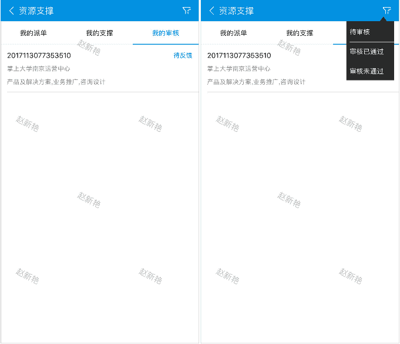
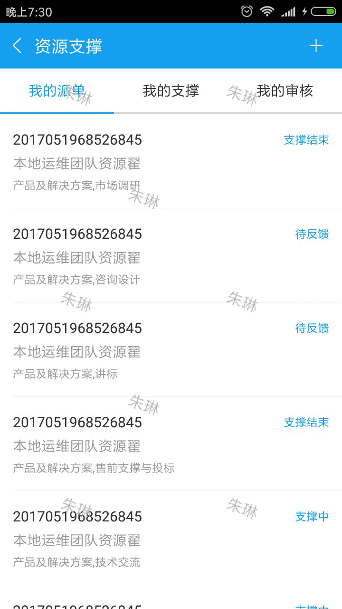
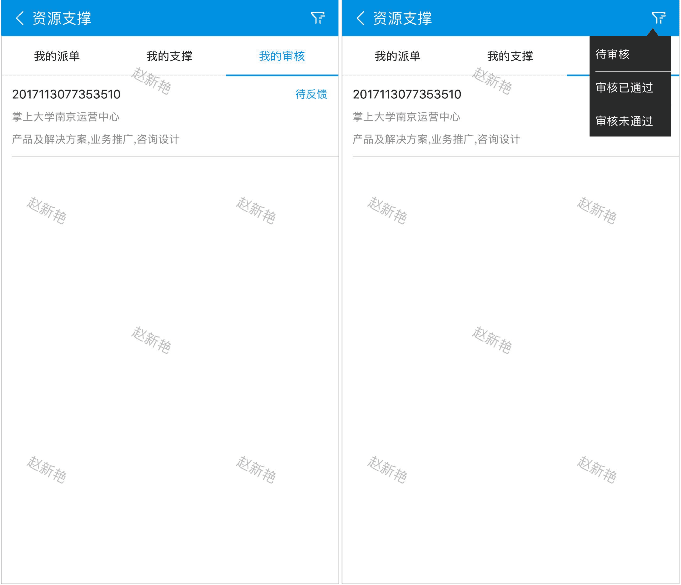
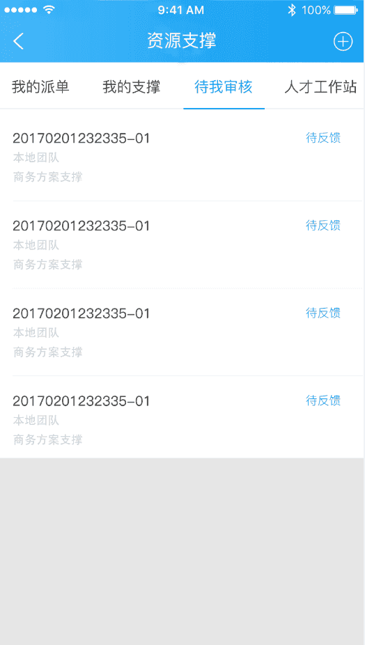
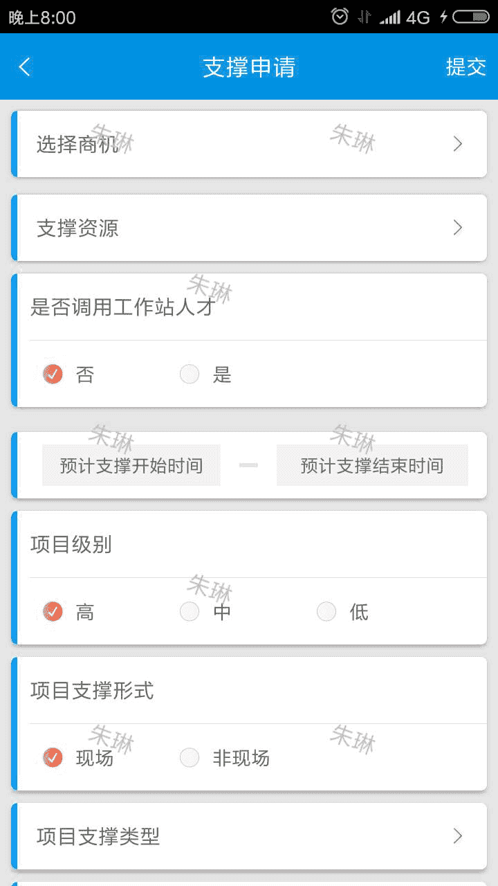
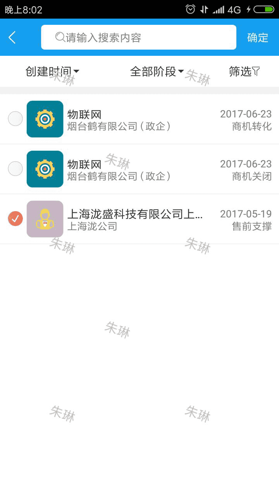
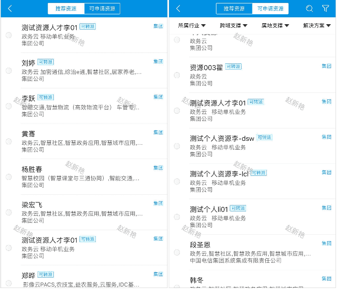
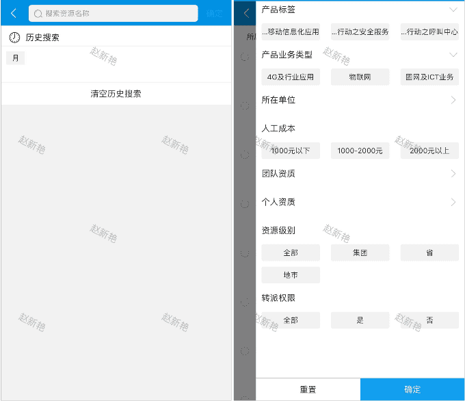
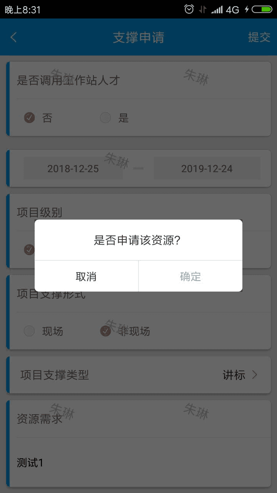
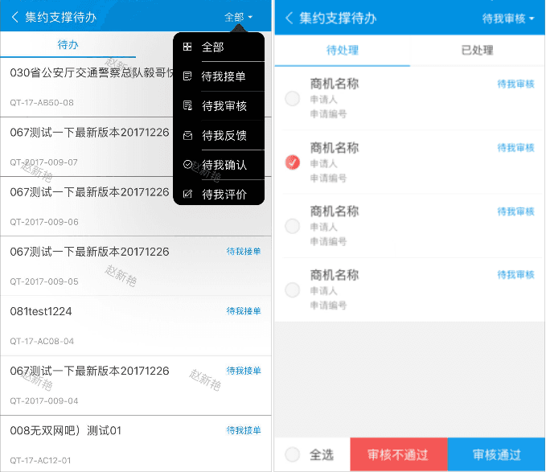

在工作台中点击【集约支撑】
现在资源支撑模块在商机内，现将资源支撑提到销售助手首页，并将资源支撑改为集约支撑，与商机平级，集约支撑下分为：我的派单、我的支撑、我的审核（原来是待我审核，先在改为我的审核）、人才工作站。
我的派单下是客户经理所有申请过支撑的支撑单记录，包括直接支撑单、协同支撑单，点击一条记录，进入相应的支撑单详情。
我的支撑下是客户经理所有支撑过的支撑单记录，包括直接支撑单、协同支撑单，点击一条记录，进入相应的支撑单详情。
我审核下是所有需要我审核或者我已审核过的支撑单，点击一条支撑单进入该支撑单的支撑单详情页可以进行审核操作。
点击右上角筛选按钮可以根据条件筛选出相对应状态的订单记录
人才工作站链接到原有人才工作站页面。
集约支撑首页-我的派单下点右上角“+”发起支撑单申请，跳转到支撑申请单发起页面，申请单需要优先选择商机，其次选择支撑资源
点击集约支撑发起页的选择商机即可选择商机，没有选中商机时显示商机筛选、搜索按钮，同原有我挖掘的商机也类似，点击商机前的单选圈选中该商机，再次点击取消选中商机，选中商机后右上角显示“确定”按钮，即选中该商机并返回支撑单发起页。
支撑资源分为推荐资源、可申请资源；
可申请资源可以按条件搜索，点击筛选可以按条件筛选资源
选择一条资源，将表单填写完整，提交；在弹出的对话框中点击”确定”
将原有资源待办合二为一，合并成“集约支撑待办”，并将待办分为“待办”和“已办”。
待办：将待审核、待接单、待确认（资源反馈、结束反馈）、待我评价加入待处理，并加入筛选条件，可供用户根据支撑单状态筛选相应的支撑单，审核状态的支撑单支持多条记录一起审核，点击每条支撑单可以进入该支撑单的支撑单详情页，进行接单、反馈等操作。
已办点将已审核、已确认、已结束的支撑单放入“已办”，点击每条支撑单都可进入相应的流转记录页面。